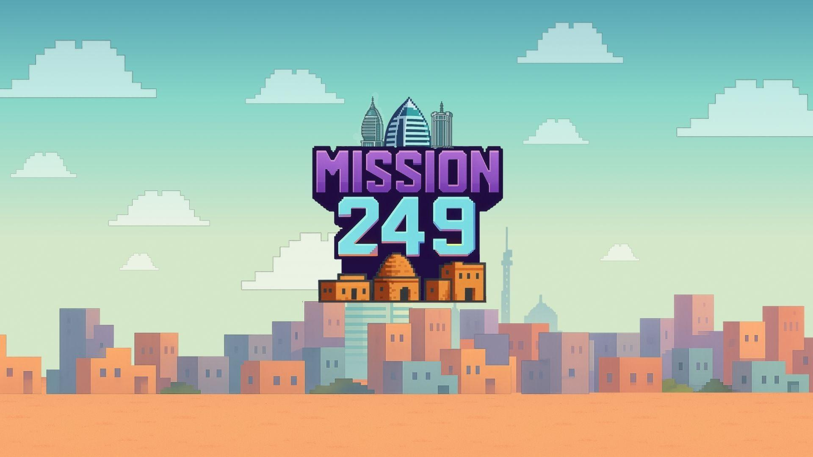
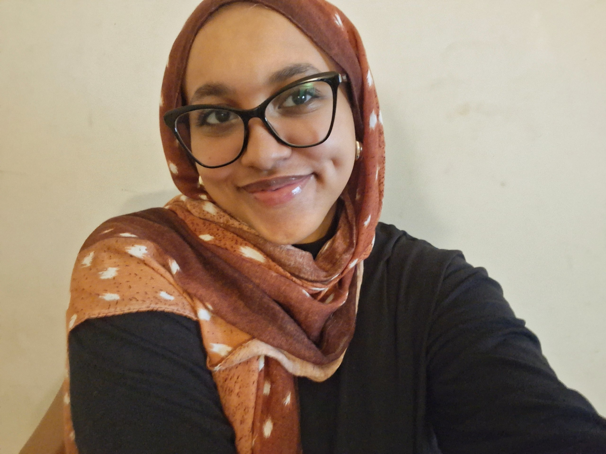
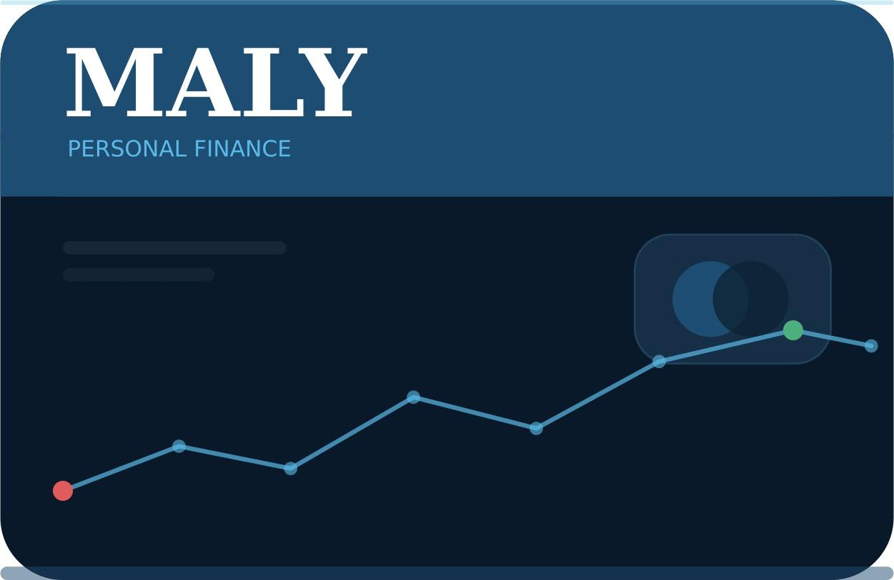
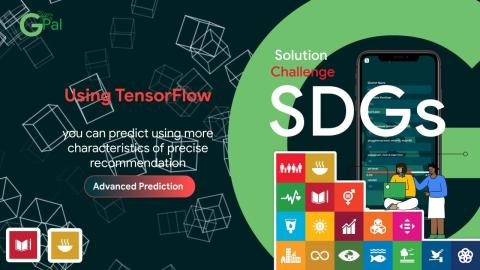

Mission249
A gamified volunteering platform that helps Sudanese youth rebuild their communities through small missions and teamwork. It took 3rd place at the Code for Sudan Hackathon.
View on GitHub →
Computer Science & AI student · Cairo University
I'm a third-year Computer Science and AI student at Cairo University. I like building practical things — web apps, ML pipelines. Outside of code, I'm curious about science, history, and the humanities.

A gamified volunteering platform that helps Sudanese youth rebuild their communities through small missions and teamwork. It took 3rd place at the Code for Sudan Hackathon.
View on GitHub →
A personal finance app in Django, structured around the Observer, Facade, and Strategy design patterns and documented with Sphinx and pdoc.
View on GitHub →
A platform where farming communities can share and find practical knowledge on crops and sustainable agriculture. I worked in Python across the project.
View on GitHub →Started as plain HTML/CSS/JS, then I rebuilt it in Django with AJAX and a database, split into multiple apps.
View on GitHub →Most of what I know about ML I learned by entering competitions and getting things wrong in notebooks. Everything below lives in my Applied Machine Learning Lab repo.
Predicting the vegetation class of regions in Mexico from spectral, radar, and terrain features (45 classes). We compared several boosted-tree models and averaged LightGBM and XGBoost for the final submission.
Predicting ADHD and sex in children from about 1,200 samples with over 19,000 features. The hard part was class imbalance, so we used stratified K-fold with downsampling and tuned decision thresholds for F1.
Classifying aquaculture ponds from satellite imagery: EDA, a LightGBM model, SHAP to understand which features mattered, and Kedro to keep the pipeline organised.
Classifying NASA Kepler objects as confirmed planets, candidates, or false positives. After EDA and comparing a few models, LightGBM reached about 92% accuracy on the test set.
Predicting where a new Airbnb user will make their first booking, using their profile data. I did EDA and feature engineering, then compared LightGBM, XGBoost, and CatBoost, evaluating with NDCG.
When I'm not coding, I'm usually reading about science or history. I like understanding how people figured things out in the first place, and how ideas moved between places and centuries. The humanities keep reminding me that the things we build are always for people.
I also crochet. It's nice to make something with my hands that I can actually hold, and following a pattern one stitch at a time isn't that different from debugging.